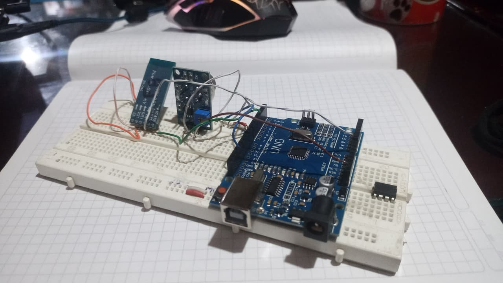
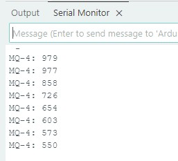

PRIMER CONEXION
LECTURAS
RESULTADOS
Al final la conexion fue funcional y al colocar el monitor serial salio una lectura de datos donde al colocar gas (de encendedor por ejemplo) incrementaba y al quitar el gas disminuia aunque aun los datos no son 100% proporcionales ni fiables ya que aun no esta calibrado ni estabilizado, pero se puede decir que todo es funcional.